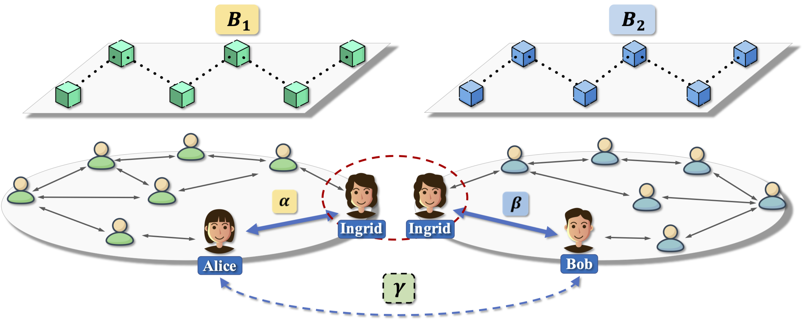
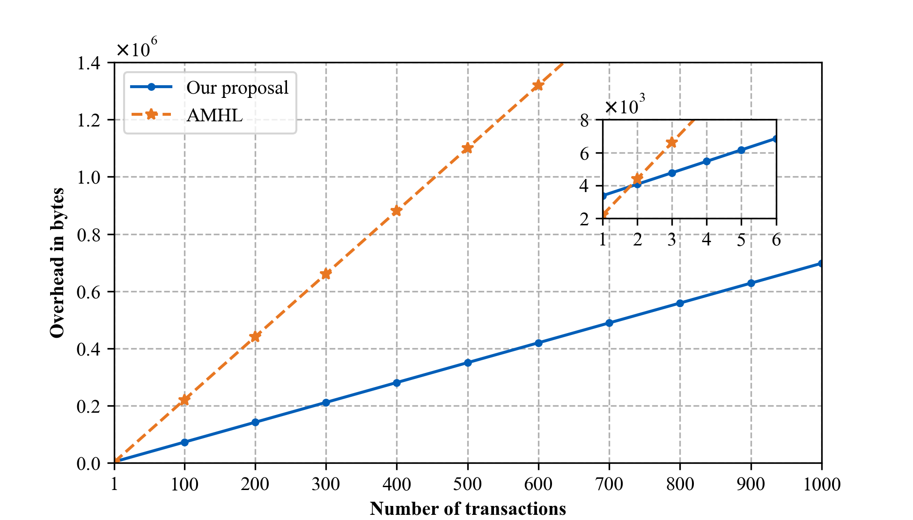
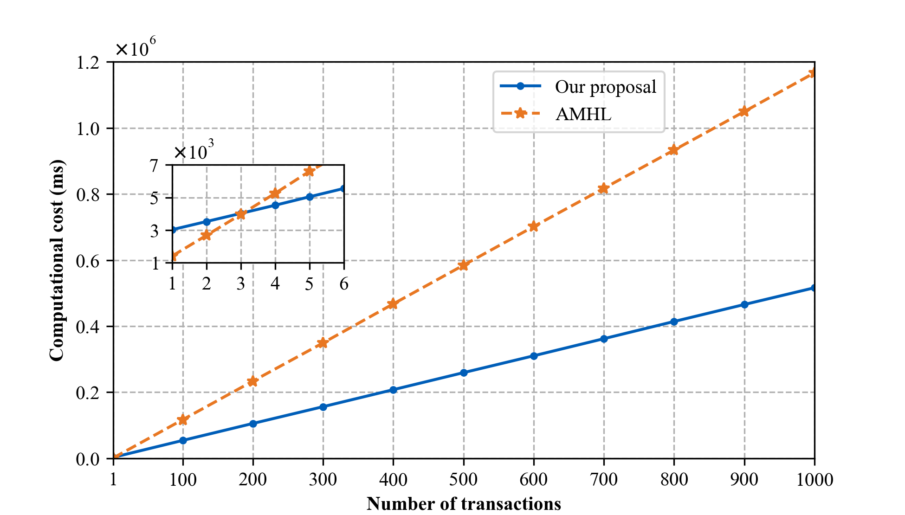

Cross-Chain Virtual Payment Channels
Abstract
With the emergence of countless independent blockchain systems in recent years, cross-chain transactions have attracted considerable attention, and lots of solutions have been put forth by both industry and academia. However, most of existing solutions suffer from either centralization or scalability issues. To mitigate these issues, in this paper, we propose the concept of cross-chain virtual payment channels, which allows two users in different blockchain systems to conduct limitless off-chain transactions with the help of an intermediate node, hence solving the centralization and scalability issues. Furthermore, as the intermediate node is only involved in the channel open and close operations, it further improves the efficiency of cross-chain transactions, and to a certain extent, it even enhances the privacy of the cross-chain transaction. Meanwhile, we also present the first concrete cross-chain virtual payment channel scheme, which only requires one of the blockchain systems supporting the Turing-complete scripting language. The corresponding detailed security analysis in the Universal Composability framework demonstrates that our proposal holds the Consensus on Open, Update, and Close. Finally, we implement and deploy our cross-chain virtual payment channel scheme on the Ethereum and Bitcoin test networks. The extensive experimental results show that our proposal dramatically improves the efficiency of cross-chain transactions, and the advantage becomes more pronounced as the number of transactions increases.
Definitions
There are three participants in our cross-chain virtual payment channel. We name them Alice, Ingrid, and Bob for the easy description. Alice and Bob have coins/accounts only in blockchain systems $B_1$ and $B_2$, respectively. At the same time, Ingrid shares a payment channel with Alice and Bob in blockchain systems $B_1$ and $B_2$, respectively. Our cross-chain virtual payment channel can allow Alice and Bob to perform limitless transactions off-chain. Unlike payment channels, we have the following four kinds of operations in cross-chain virtual payment channels, namely Open, Update, Close, and Offload.
- Open: Suppose Ingrid has payment channels $\alpha$ and $\beta$ in two blockchain systems with Alice and Bob, respectively. Alice and Bob create the cross-chain virtual payment channel $\gamma$ based on $\alpha$ and $\beta$ with the help of Ingrid.
- Update: $\gamma.Alice$ and $\gamma.Bob$ perform instant off-chain transactions by updating the state of $\gamma$.
- Close: $\gamma.Alice$, $\gamma.Ingrid$, and $\gamma.Bob$ reach a consensus on the final state of $\gamma$. With this final state, $\gamma.Ingrid$ updates payment channels $\alpha$ and $\beta$ with $\gamma.Alice$ and $\gamma.Bob$, respectively. After that, the cross-chain virtual payment channel $\gamma$ is closed.
- Offload: $\gamma.Alice$, $\gamma.Ingrid$, and $\gamma.Bob$ execute the offload procedure when some dispute happens in other operations of the channel $\gamma$. $\gamma.Ingrid$ closes payment channels $\alpha$ and $\beta$ with $\gamma.Alice$ and $\gamma.Bob$, respectively. Furthermore, the cross-chain virtual payment channel $\gamma$ will be closed and become a payment channel in one of the underlying blockchain systems. In the end, the dishonest participant of $\gamma$ will be punished.
Security and Efficiency Goals
Security Goals
Since the cross-chain virtual payment channel is essentially a payment channel that has not been published on the blockchain, it must have the security properties of the payment channel, including
- Consensus-Open. A channel can only be successfully opened when Alice, Bob, and Ingrid reach a consensus on the open of the channel.
- Consensus-Update. The state update of the channel needs to be approved by Alice and Bob.
- Consensus-Close. A channel can only be successfully closed when honest users agree on the consequence of the closure, and dishonest users are penalized.
Efficiency goals
As the existing virtual payment channel schemes, cross-chain virtual payment channels should also satisfy the following efficiency goals in terms of communication rounds.
- Efficiency-Open. Constant round opening: Successful open of a cross-chain virtual payment channel $\gamma$ takes a constant number of rounds.
- Efficiency-Update. Optimistic updating: For the channel $\gamma$, this property guarantees that a channel update takes a constant number of rounds if $\gamma.Alice$ and $\gamma.Bob$ are honest.
- Efficiency-Close. Optimistic closing: When all participants in the channel $\gamma$ are honest, the closing of $\gamma$ takes a constant number of rounds.
Property Efficiency-Update applies to all kinds of off-chain channels, including payment channels, virtual payment channels, and our proposed cross-chain virtual payment channels. Furthermore, in the optimistic case, all the operations in (cross-chain) virtual payment channel are executed off-chain.
Cross-chain virtual payment channel protocol

Performance Evaluation
 Demo download
The sourcecode of this project can be found at github.com/Yzyzzzz23/Cross-chain_Virtual_Payment_Channel-Code.